如果函数y=f（x）在变量x的两给定限之间连续，并在这两个限之间指定变量的一个值，那么这变量的一个无限小增量Δx将产生函数本身的一个无限小增量．因此若设Δx=i，则下列差[3]商
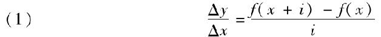
中的两项均为无限小量．虽然这两项同时趋于零，但比值本身却可能收敛于另一个极限，它可以是正数，也可以是负数．这个极限，如果存在的话，对于每个特殊的x值都将有一个确定的值，但这个值将随x的变化而变化．这样，例如我们取f（x）=xm，m是一个整数，则无限小差的比将是[4]
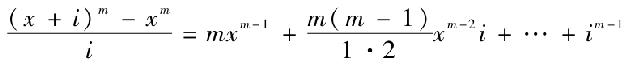
其极限[5]等于量mxm-1，也就是说是变量x的一个新的函数．同样的事实普遍成立，只是作为比
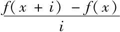
的极限的这个新函数的形式将随已给函数y=f（x）的不同而不同．为了表明这种依赖关系，我们称这个新的函数为导函数[6]，并用带撇的符号y′或f′（x）来表示它．在研究单变量函数的导数时，注意区分简单函数和复合函数，简单函数就是对函数变量只施行一种运算的结果，复合函数是施行多种运算的结果．进行代数以及三角函数运算（参见《分析教程》第一章第一部分）的简单函数可以化简成以下形式：
a+x，a-x，ax，
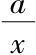
，xa，Ax，Lx，sinx，cosx，arcsinx，arccosx，A表示一个常数，a=±A是一个常量[7]，L表示以A为底的对数函数．通常用y表示一个简单函数，易得导函数y′，例如：
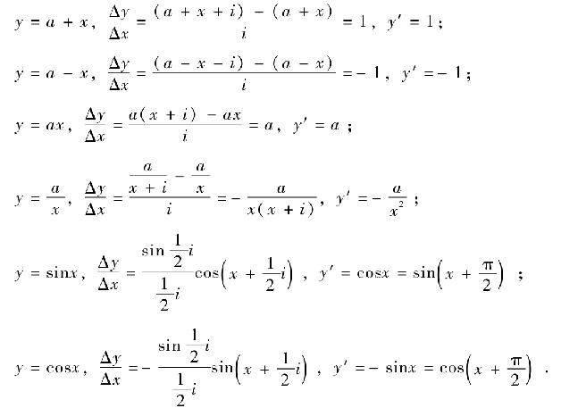
而且，令i=αx，Ai=1+β，且（1+α）a=1+γ，则
对于y=Lx，
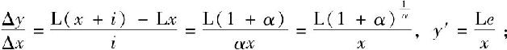
对于y=Ax，
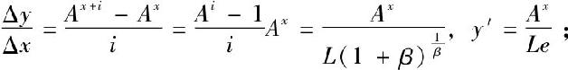
对于y=xa，
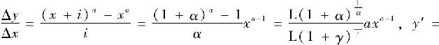
axa-1．上述公式中，e表示数字2.718…，也就是表达式（1+α） 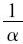
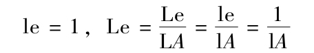
而且，对于y=lx，y′=
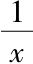
；对于y=ex，y′=ex．
因为上述公式是仅由与y的实值相对应的x值而确定的，所以应在这些包含Lx、lx[10]甚至是函数xa（如果a表示一个分母是偶数的分数[11]或是一个无理数[12]）的公式中假设x值为正．
设z是与x的第一个函数y=f（x）由公式
（2） z=F（y）
相联系的第二个函数．z或F［f（x）］称作变量x的函数的函数；如果用Δx，Δy，Δz表示无穷小增量，x，y，z表示变量，则有
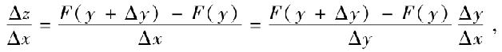
取极限，得到
（3） z′=y′F′（y）=F′（x）f′［f（x）］．
例如，如果令z=ay，y=lx，则有
如果已知函数Lx，sinx，cosx的导函数，那么由公式（3），易得简单函数Ax，xa，arcsinx，arccosx的导函数．因此，
对于y=Ax，Ly=x，
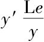
=1，y′=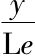
=AxlA；对于y=ax，ly=alx，
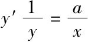
，y′=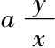
=axa-1；对于y=arcsinx，siny=x，y′cosy=1，y′=
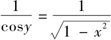
；对于y=arccosx，cosy=x，y′×（-siny）=1，y′=
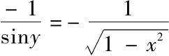
而且，由公式（3），复合函数
的导函数分别是
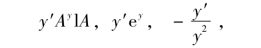
于是以下这些函数
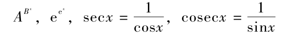
的导函数将是
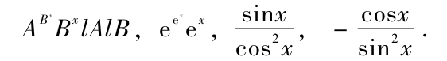
复合函数的导函数往往比那些简单函数容易求得．比如，对于
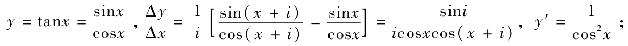
对于y=cotx=
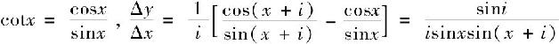
，y′=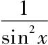
；最后，对于y=arctanx，tany=x，
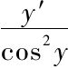
=1，y′=cos2y=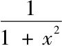
；对于y=arccotx，coty=x，
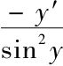
=1，y′=-sin2y=-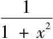
．设y=f（x）是一个独立变量x的函数，设i为一无穷小量，而h为一有限量．如果我们设i=αh，那么α将是一个无穷小量，同时我们将有恒等式：
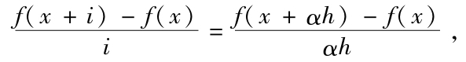
由此可得：
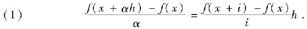
当变量α趋于零而h保持不变时，方程（1）左端所收敛的极限叫做函数y=f（x）的微分[13].我们用符号d来表示这个微分，记作
dy或df（x）．
如果我们已经知道导函数y′或f′（x）的值，那就很容易得到微分的值．事实上，在方程（1）两边取极限，我们就得到一般的结论
（2） df（x）=hf′（x）
在f（x）=x这一特殊情形，方程（2）变成
（3） dx=h.[14]
因此独立变量x的微分就是常量h.也就是说，方程（2）变成
（4） df（x）=f′（x）dx，
或者是与之等价的表达式
（5） dy=y′dx．
由最后一个方程可知，一个函数y=f（x）的导函数y′=f′（x）恰等于
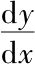
，也即导数等于函数的微分与变量的微分之比，或者说，导数就是为了得到第一个微分而与第二个微分相乘的系数．因此，我们通常称导函数为微分系数．微分一个函数就是求它的微分．这样的运算称为微分法．
其实由公式（4）可立即得到已知导数的函数的微分．如果先把这个公式应用于简单函数，则有
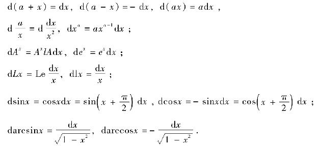
同样，可以建立以下等式：
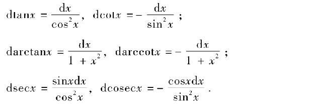
在之前讲座中已经得到的那些方程一直到（这一讲座中的）这些特殊方程，所有这些不同的方程可以看作是对于与（已求得导数的）实值函数对应的x值的证明．
因此，简单函数a+x，a-x，ax，
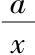
，Ax，ex，sinx，cosx以及函数xa（如果a是一个整数或是分母为奇数的分数[15]）的微分对于变量x的任意实值都可以求得，但是在求简单函数arcsinx和arccosx[16]的微分时，我们必须假定变量x值范围是在-1到+1之间的，求Lx和lx的微分时[17]，变量x值范围限定在0到∞之间，求xa的微分时，如果a的值是一个分母为偶数的分数或是一个无理数，则变量x值应大于或等于零[18]．需要注意的是，我们遵循着《分析教程》第一部分中所作的约定，符号arcsinx，arccosx，arctanx，arccotx，arcsecx，arccosecx不仅仅是用来表示其相应的三角函数线等于x的任意弧度，而且是表示这些值中数值最小的那个[19]，或者如果这些弧度两两相等、符号相反，则表示其中最小正值的那个[20]．
因此，arcsinx，arctanx，arccotx，arccosecx都是介于限-
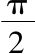
到+之间的；arccosx，arcsecx是介于限0到π之间的．[21]如果我们设y=f（x）以及Δx=i=αh，方程（1）（其第二项的极限是dy）就取以下形式
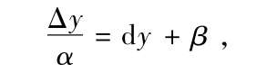
β表示一个无穷小量[22]，由此可推出
（6） Δy=（dy+β）α
设z是变量x的第二个函数，同样地，有
Δz=（dz+γ）α，
γ也表示一个无穷小量．立即得到
取极限有
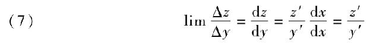
因此，变量x的两个函数的不同的无穷小函数值之比的极限就是它们的微分或导数之比．
现在，假设函数y和z由方程
（8） z=F（y）
相联系．可以推出
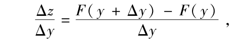
取极限并且联立公式（7），
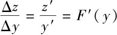
，得到（9） dz=F′（y）dy，z′=y′F′（y）．
方程（9）的第二项与上一讲的方程（3）一致．
而且，如果在第一个表达式中用F（y）替换z，得到
（10） dF（y）=F′（y）dy，
形式上与方程（4）相同，即使y不是一个独立变量，也可用于求y的函数的微分．
例如：
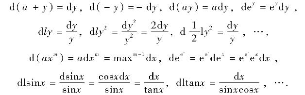
第一个公式说明一个函数与一个常数相加，微分不变，于是导数也不变．
[1]英译本译者John Anders．
[2]我选取与“课程”相对应的“讲座”这个词汇，是因为觉得如果称这些内容为“课程”，似乎就隐含着柯西认为这些论文就是对于众所周知的知识的介绍，尽管关于导数与积分的基本概念在柯西之前已被熟知，而且柯西的文章结构与风格在许多方面都是教学形式的，但是柯西把他自己对于已知知识的方法看作是新颖的，是因为他认为在某种程度上为这类问题建立了之前不曾有过的严格基础．
[3]“差”是Δy和Δx．
[4]柯西通过二项式展开（“帕斯卡展开”），然后再减去xm，除以i，就得到这个方程
[5]当x或i趋于零时的极限．通常，柯西提到极限时，是指当一个变量或几个变量趋于零时的极限．
[6]fonction dérivée（导函数）
[7]柯西似乎是用数（nombre）来表示我们今天称之为正实数的数，用量（quantité）表示所有实数（这样，量可以看作是+的或-的数）．
[8]也即当α趋于0时的极限．
[9]今天，我们称这个对数为“自然对数”．
[10]柯西担心遇到求一个负数的对数的情形，这种情形的结果一般不是一个实数．
[11]若x为负数或分数a分母为偶数，则这个分数应重写成另一种形式，其中a为一个可被2整除的有理数，这就表示，整个表示式就是一个负数的有理数幂的平方根．因此，对于某些幂次而言，这个表示式就是虚数．
[12]柯西担心出现（-3）π和（-5）e的情形．
[13]Diefférentille（微分）
[14]正如柯西所言，这个dx既不是Δx，也不是Δx的极限，它是函数f（x）=x的微分．
[15]见注10
[16]这些函数仅从-1到1之间取值．
[17]见注9
[18]见注10和11
[19]例如，arcsin（1）可以看作是这个问题的答案：什么弧度的正弦是1呢？然而，由于三角函数的周期性质，这个问题有无穷多个答案：
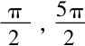
，…．若我们把这些值都看作是函数在1处的值，则对于一个给定的变量，函数是多值的．为了避免这种情况出现，柯西告诉我们要把答案的范围限定在这些值的最小的那个．[20]例如，arccos
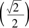
等于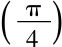
±n2π和-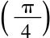
±n2π，即使有了柯西的限定，对于这个反余弦函数，仍然能得到两个值．通常这些值都是成对出现，并且大小相等，符号相反．为了保证给定一个变量能得到唯一函数值，柯西把函数的范围限定在这些成对出现的数中取正值的那一个．[21]反三角函数（也就是arc函数）把三角函数的结果作为它们的自变量，把弧度看作是它们的函数值．由于柯西对自变量作出的限制范围，“arc函数”的弧度或是函数值也被限定在指定的范围之内．
[22]正如柯西所暗示的，方程（1）的第二项可以看作是已求得的微分（仅在极限处存在）加上一个无穷小量，这个无穷小量将取极限之前的表达式与取极限之后的表达式——也即微分本身——分离开来．